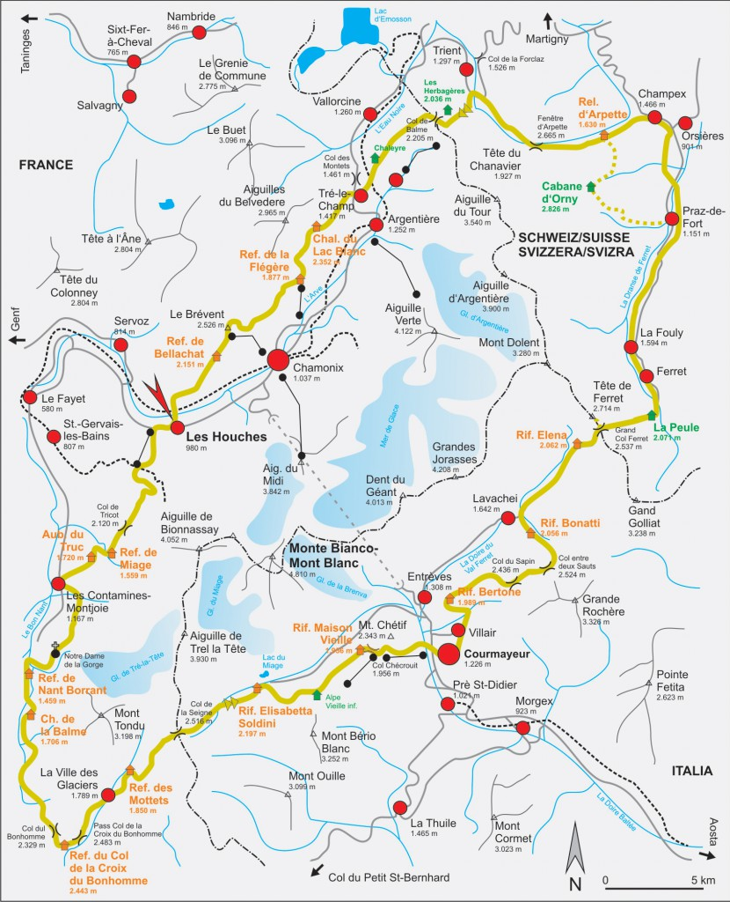

Introduction
Frequently referred to as the ‘TMB’ for short, the Tour du Mont Blanc circumnavigates the Mont Blanc massif and takes trekkers through France, Italy, and Switzerland covering 170km. Over 10,000 hikers per year embark on this multi-day journey.
The Tour du Mont Blanc is a challenging trek, but it is also one of the most rewarding. The scenery is spectacular, and the route is well marked and well maintained. The Tour du Mont Blanc is a great option for experienced trekkers looking for a challenge, and it is also a great option for those who are looking to take their first long-distance trek.
The Route
The Tour du Mont Blanc is a circular route that starts and ends in Les Houches, a town close to Chamonix, France. The route passes through seven mountain valleys (Val d’Arve, Val d’Montjoie, Vallee des Glaciers, Val Veny, Italian Val Ferret, Swiss Val Ferret, and Vallee du Trient) and visits charming alpine hamlets as it winds its way around Mont Blanc.
The Tour du Mont Blanc has many variations and route options. These variations include options to tackle challenging mountain passes (e.g. Fenetre d’Arpette), visit crystal clear mountain lakes (such as Lac Blanc), or to simply avoid some of the more challenging sections of the hike. However, the traditional route of the TMB is approximately 170-kilometers long.
Tour du Mont Blanc's 11 Stages
The Tour du Mont Blanc hiking route is traditionally divided into 11 sections which can be hiked in a day. Each section is called a ‘stage’. Stages are averaging between 13-20km per day over challenging terrain. The expected elevation gain is from 700m up to 1000m each day. Experienced hikers can complete the entire route in fewer days.
- France – Les Houches (Chamonix) – Les Contamines (16km)
- France – Les Contamines – Les Chapieux (18km)
- France/Italy – Les Chapieux (FR) – Rifugio Elisabetta (IT)(15km)
- Italy – Rifugio Elisabetta – Courmayeur (18km)
- Italy – Courmayeur – Rifugio Bonatti (12km)
- Italy/Switzerland – Rifugio Bonatti (IT) – La Fouly (CH)(20km)
- Switzerland – La Fouly – Champex-Lac (15km)
- Switzerland – Champex-Lac – Col de la Forclaz (or Trient)(16km)
- Switzerland/France – Col de la Forclaz – Tré-Le-Champ (FR)(13km)
- France – Tré-Le-Champ – Refuge La Flégère (8km)
- France – Refuge La Flégère – Les Houches (17km)